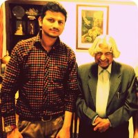
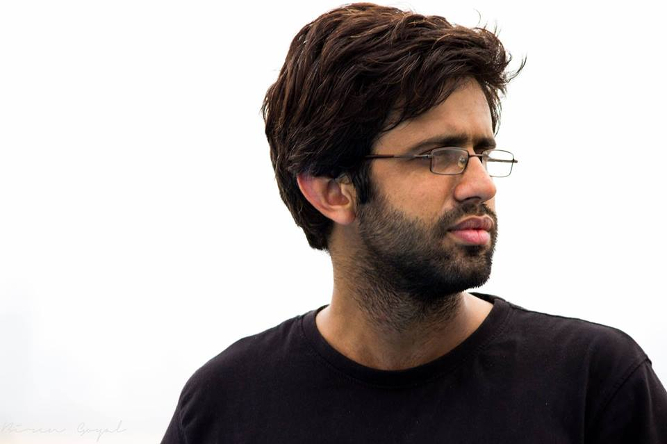
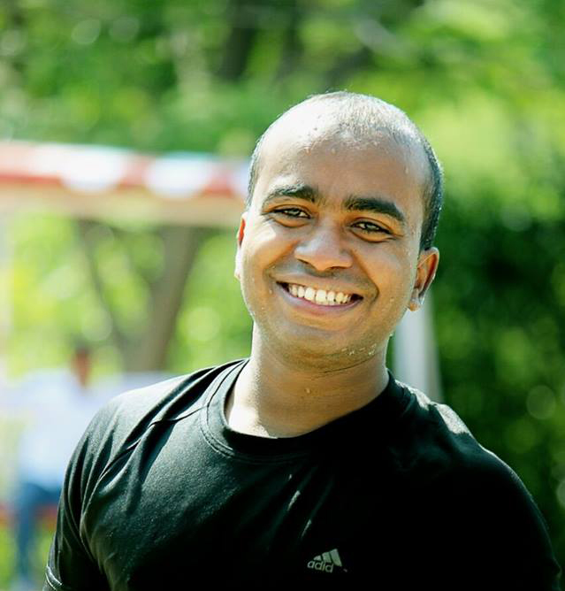
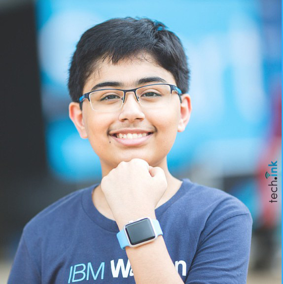
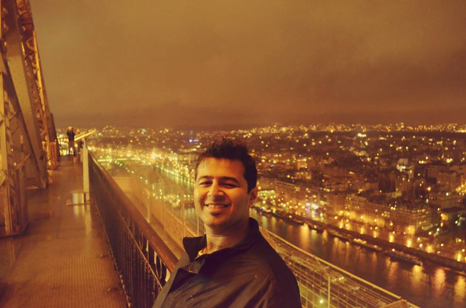

Techspardha

Gusto talks

Sourabh Kaushal
Founder and Director at Smartcircuits Innovation Pvt. Ltd.
at Senate Hall
20 January 9 am to 11 am
Engineer,Space explorer and INK Fellow in association with TED, presently doing research on Space Debris Mitigation and Transportation with internationally recongnised research papers,young achiever of some prestigous awards including Jerome Pearson award,2010 and kaplana chawla young scientist award, 2013.

Anurag Kundu
Reseacher at AAP
at Senate Hall
20 January 2 pm to 4 pm
Socialist teaching under resourced schools at Teach For India, provides research input to media cell on matter realted to policies , english proficient and former columnist for Indian Economist, takes interest in governance, education and debating, alumni to NIT kurukshetra.

Vivek Prakash
Co-Founder Hackerearth
at Senate Hall
21 January 9 am to 11 am
Hard core programmer and IIT Roorkee graduate,loves building developer friendly tools, passionate about improving programming experience, launched a tool for compiling and running codes online, also the co-founder of My Career Stack.

Tanmay Bakshi
Keynote speaker at TEDx and Developer
at Senate Hall
21 January 2 pm to 4 pm
13 years old software developer with specialisation in iOS, IBM Champion, Honorary IBM Cloud advisor, author of "Hello Swift" about iOS programming for kids, passionate about learning and sharing knowledge , runs his own youtube channel for the same.

Nikhil Taneja
Creative producer at Yash Raj Films
at Senate Hall
22 January 9 am to 11 am
A writer-producer of six TV films and a sitcom, famous for his witty one liner "Taneja Main Hoon, Mark Idhar hai",alumni to NIT Kurukshetra, teaches Journalism at Jai Hind college, loves watching movies and trying writing for the same.